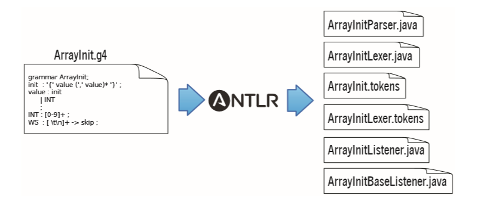
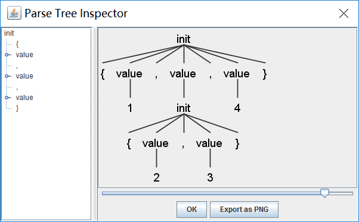

第三章——antlr小试牛刀
![]()
接下来开始我们的第一个入门项目。
我们会构建C或者它的派生语言如Java的一个语法子集。详细点说，就是识别像{1,2,3}或者{1,{2,3},4}这样的由大括号包围（或嵌套）的整数。这个结构可能是整数数组，也有可能是结构体的初始化。这个语法在很多情况下都是很有用的，例如，我们可以用它来构建一个用来将int数组转换为字节数组（如果数组的所有初始值大小都在一个字节内的话）的C语言源码重构工具。我们也可以用这个语法来将Java的short数组转换为字符串，例如，我们可以将下面的代码：
static short[] data = {1,2,3};
转化为：
static String data = "\u0001\u0002\u0003"; // Java的字符是无符号的short
Unicode使用四个十六进制位来表示16位（short的长度）的字符值，例如\u0001。
我们之所以要做这个转换，是因为，在Java的.class文件中，存在一些限制。在Java的.class文件中，数组的初始化是像data[0]=1;data[1]=2; data[2]=3;这样的显式赋值初始化，而不是一个包含初始化数据的紧凑代码块。因为Java规范中限制了初始化方法的大小，所以数组的初始大小也被限制了。而不同的是，在Java.class文件中，字符串是以连续的short序列的形式存储的，所以，将数组转换为字符串可以生成更紧凑的.class文件，并且突破初始化方法的大小限制。
通过这个入门项目，你将会学习，antlr的语法定义语法，它将语法文件生成了哪些东西，如何将在Java程序中包含antlr生成的语法分析器代码，以及如何使用监听器来构建一个翻译器。
3.1 antlr的工具、运行时，以及生成的代码
开始之前，我们先来剖析一下antlr的jar包。在antlr中，有两个重要的组件：antlr生成工具和运行时。当我们“在一个语法上运行antlr”时，我们是在讨论antlr生成工具，org.antlr.v4.Tool类，它将会生成可以识别符合语法的句子的程序代码（词法分析器和语法分析器）。词法分析器将输入的字符流解析为token并且将它们传递给语法分析器来检查语法正确性。而运行时是生成的语法分析器、词法分析器、token在运行时所需要的类库和方法。我们先运行antlr生成工具来生成代码，然后编译它们，最后，在antlr的运行时中运行生成的代码。
在我们构建一个语言应用之前，我们必须先编写描述语法规则的语法文件。我们会在第五章详细学习如何来编写语法，但是在此之前，我还是先给出我们接下来所需要的语法描述：
ArrayInit.g4
/*语法文件都由一个语法头开始，它指定了语法的名称，而且语法名称必须和文件名相同。
* 在这个例子中，语法名称是ArrayInit，文件名为ArrayInit.g4
*/
grammar ArrayInit;
/* init将匹配在大括号中，由英文逗号分割的值。*/
init : '{' value (',' value)* '}' ; // 匹配至少一个值
/*值可以是整数，也可以是嵌套的数组*/
value : init | INT ;
//语法规则由小写字母开头，词法规则由大写字母开头
INT : [0-9]+ ; //定义整数
WS : [ \t\r\n]+ -> skip ; // 忽略空白符
将ArrayInit.g4文件放在一个单独的文件夹下，例如/tmp/array。然后，运行antlr生成工具：
$ cd /tmp/array
$ antlr4 ArrayInit.g4 # 使用之前设置的别名运行antlr生成工具
随后，我们会发现，在此目录下，antlr为ArrayInit.g4这个语法生成了很多个文件：

于此，我们对开发的流程有了一个大致了解。接下来让我们来了解一下这些生成的文件：
ArrayInitParser.java这个文件包含了为了ArrayInit这个语法生成的语法分析器，它包含对应每一个语法规则的函数以及一些其他的支持代码。ArrayInitLexer.javaantlr会自动从语法文件中分离出词法和语法。这个文件包含了ArrayInit的词法定义，INT、WS以及字面值如{、,和}。记住，词法分析器的作用是将输入解析为token。ArrayInit.tokensantlr会为我们定义的token类型赋予一个类型数，并且将它们存储在这个文件中。当我们需要将一个很复杂的语法分解为多个小语法时，为了同步所有的token类型，这个文件是很有必要的。ArrayInitListener.java、ArrayInitBaseListener.java默认地，antlr会为输入构建一个语法分析树。通过遍历这个树，遍历器可以触发我们提供的监听器对象的回调方法。ArrayInitListener是这些回调方法的接口，而ArrayInitBaseListener是ArrayInitListener的空实现，通过继承这个类，我们可以只覆盖我们感兴趣的回调方法。antlr也可以通过添加-visitor命令行参数生成Visitor（见上一章）。
我们会在后面使用监听器类来将short数组转换为字符串对象，但是，在此之前，我们要确认一下，这个生成的语法分析器是否可以识别一些简单的输入。
antlr的语法描述能力比正则式强大得多
熟悉正则式（维基百科：正则表达式）的人可能会有疑问，用antlr来解决如此简单的识别问题，是不是有点大材小用了。但事实是，因为存在嵌套，我们并不能使用正则式来识别这个数组初始化的例子。正则式是无记忆的，因为它不能回想起它之前识别过的输入。因此，正则式不知道怎么识别左右两边的大括号。
3.2 测试生成的语法分析器
在开始测试之前，我们必须先编译这些生成的Java源代码。我们可以直接编译在/tmp/array下的所有文件：
$ cd /tmp/array
$ javac *.java #编译生成的语法分析器
如果你编译时出现了ClassNotFoundException错误，这就意味着你可能没有设置好Java的CLASSPATH环境变量。在UNIX系统中，你需要执行以下的命令（你也可以添加到shell的启动脚本中，例如.bash_profile）：
$ export CLASSPATH=".:/usr/local/lib/antlr-4.0-complete.jar:$CLASSPATH"
为了测试我们的语法，我们使用在之前的章节中设置的TestRig的别名grun。下面使用它来打印词法分析器识别出的token：
$ grun ArrayInit init -tokens
{99, 3, 451}
EOF
[@0,0:0='{',<1>,1:0]
[@1,1:2='99',<4>,1:1]
[@2,3:3=',',<2>,1:3]
[@3,5:5='3',<4>,1:5]
[@4,6:6=',',<2>,1:6]
[@5,8:10='451',<4>,1:8]
[@6,11:11='}',<3>,1:11]
[@7,13:12='<EOF>',<-1>,2:0]
在输入{99,3,451}后，我们必须再输入EOF（unix:ctrl+D;windows:ctrl+Z）。默认地，antlr会在处理之前加载整个输入（通常来说，这个是效率最高的方法）。
输出的每一行代表一个token，它展示了这个token的所有信息。例如，[@5,8:10='451',<4>,1:8]表示：这个token的索引为5（起始为0），文本内容为451，是第8到10个字符（索引也由0开始），token类型是4（INT），在第一行（从1开始），第8列（从0开始，tab算做一个单独的字符）。可以看到，并没有空格和换行符的token，因为我们的语法中，WS声明将它们忽略（->skip）。
为了更详细地了解语法分析器是怎样识别的，我们可以在运行时加上-tree参数：
$ grun ArrayInit init -tree
{99, 3, 451}
EOF
(init { (value 99) , (value 3) , (value 451) })
加上-tree参数将会以Lisp风格输出语法分析树。又或者，加上-gui参数，在一个对话框中可视化语法分析树。我们用一个嵌套的数组作为输入：
$ grun ArrayInit init -gui
{1,{2,3},4}
EOF
下面就是弹出的语法分析树对话框：

语法树可以说人话的话，它就是在说“这个输入是用大括号包围的包含三个值的数组初始化，第一个和第三个值是整数1和4，第二个值也是一个数组，它包含两个值，值为2和3”。
这些内部节点，例如init和value，通过名称来识别各种各样的输入，就像，在英语句子中识别动词和主语。antlr会基于我们语法文件中的语法规则自动为我们构建语法分析树，在这章的末尾，我们会利用antlr内置的遍历器触发像enterInit()和enterValue()这样的回调方法来构建一个翻译器。
现在，既然我们已经学会了如何用antlr来测试语法，那么我们就开始学习如何在Java程序中调用这个生成的语法分析器吧！
3.3 将生成的语法分析器集成进Java程序
有了先前的良好开始后，我们就可以将antlr生成的语法分析器集成进一个更大程序中了。在这节，我们将会学习一个在Java程序中使用main方法调用语法分析器并且打印像TestRig添加-tree参数的输出的简单程序。以下这个Test.java文件大致体现出了第二章第一节的那个数据流图：
Test.java
//导入antlr的运行时库
import org.antlr.v4.runtime.*;
import org.antlr.v4.runtime.tree.*;
public class Test {
public static void main(String[] args) throws Exception {
//创建一个读取标准输入的CharStream
ANTLRInputStream input = new ANTLRInputStream(System.in);
//创建一个从指定的CharStream中读取数据的词法分析器
ArrayInitLexer lexer = new ArrayInitLexer(input);
//创建一个词法分析器产生的token缓冲
CommonTokenStream tokens = new CommonTokenStream(lexer);
//创建一个从token缓冲中读取token的语法分析器
ArrayInitParser parser = new ArrayInitParser(tokens);
ParseTree tree = parser.init(); //开始分析规则init
System.out.println(tree.toStringTree(parser)); // 打印Lisp风格的语法分析树
}
}
这个程序使用了一系列像CommonTokenStream和ParseTree这样的antlr运行时中的类，我们会在第四章第一节详细学习它们。
接下来让我们编译并运行这个程序：
$ javac ArrayInit*.java Test.java
$ java Test
{1,{2,3},4}
EOF
(init { (value 1) , (value (init { (value 2) , (value 3) })) , (value 4) })
antlr也可以自动地报告和恢复语法错误。例如，我们的输入如果少了最后一个大括号，它将会产生以下的输出：
$ java Test
{1,2
EOF
line 2:0 missing '}' at '<EOF>'
(init { (value 1) , (value 2) <missing '}'>)
于此，我们已经学会了如何运行antlr生成工具，如何将生成的语法分析树集成到Java程序中。如果一个程序只可以用来检查语法的话，并没有什么大不了的，因此，下面让我们来完成这个将short数组转换为字符串的翻译器。
3.4 构建一个语言应用
下面继续先前的例子。我们的下一个目标不仅仅是识别，而且还要做一些翻译工作。例如，将Java的short数组{99,3,451}翻译成\u0063\u0003\u01c3这样的字符串，其中63是99的十六进制表示。
为了超越先前的识别功能，我们必须从语法分析树中提取一些信息。最简单的方法就是，利用antlr内置的语法树遍历器，在它进行深度优先遍历时，触发一系列的回调方法。正如之前看到的，antlr自动为我们生成了一个监听器。这些监听器就像是GUI组件中的回调（例如，一个按钮可以在它被按下时触发一些事件），或者是XML文件的SAX解析器。
而我们需要做的，只是小小的工作：继承ArrayInitBaseListener，实现其中的一些方法。最简单的实现就是，在进行树遍历时，每一个监听器方法打印出翻译出来的片段。
使用监听器的好处就是，我们不需要自己去进行树遍历。事实上，我们甚至都不需要知道antlr运行时正在遍历语法分析树、回调我们的监听器方法。我们仅仅需要知道的是，在进入和离开某个语法规则时，会触发监听器的方法。正如我们将在第七章看到的，这种方法大大减少了我们的学习量，我们需要面对的仍然是编程时的难题，而不是句子识别时的难题。
开始编写这个翻译程序之前，我们要知道，如何将输入的token转换为输出的字符串。对此，我们可以先对几个有代表性的例子进行手动翻译，以此来总结转换的过程。在这个例子中，翻译的过程是非常直接的：
通俗来说，这个翻译过程就像是“X 转换为 Y”的映射规则：
- 将
{翻译为"； - 将
}翻译为"； - 将整数翻译为以
\u为前缀的四位十六进制字符串。
为了写出这个翻译器，我们需要编写一些在碰到对应的token时可以打印出翻译结果的方法。内置的树遍历器会在进入和退出某个语法规则时触发监听器事件。下面是我们的监听器实现：
ShortToUnicodeString.java
/* 将像{1,2,3}这样的数组转换为"\u0001\u0002\u0003" */
public class ShortToUnicodeString extends ArrayInitBaseListener {
/* 将`{`翻译为`"` */
@Override
public void enterInit(ArrayInitParser.InitContext ctx) {
System.out.print('"');
}
/* 将`}`翻译为`"` */
@Override
public void exitInit(ArrayInitParser.InitContext ctx) {
System.out.print('"');
}
/* 将整数翻译为以`\\u`为前缀的四位十六进制字符串 */
@Override
public void enterValue(ArrayInitParser.ValueContext ctx) {
// 假设没有嵌套
int value = Integer.valueOf(ctx.INT().getText());
System.out.printf("\\u%04x", value);
}
}
我们不需要覆盖每一个enter/exit方法，我们只需要我们关心的那些。其中，我们可能比较不熟悉的表达式是ctx.INT()，它代表向上下文对象请求已经匹配的整数INT的值。上下文对象记录了识别过程中发生的任何东西。
我们还需要做一件事，就是创建一个和前一节类似的主程序：
Translate.java
//导入antlr的运行时库
import org.antlr.v4.runtime.*;
import org.antlr.v4.runtime.tree.*;
public class Test {
public static void main(String[] args) throws Exception {
//创建一个读取标准输入的CharStream
ANTLRInputStream input = new ANTLRInputStream(System.in);
//创建一个从指定的CharStream中读取数据的词法分析器
ArrayInitLexer lexer = new ArrayInitLexer(input);
//创建一个词法分析器产生的token缓冲
CommonTokenStream tokens = new CommonTokenStream(lexer);
//创建一个从token缓冲中读取token的语法分析器
ArrayInitParser parser = new ArrayInitParser(tokens);
ParseTree tree = parser.init(); //开始分析规则init
// 创建一个普通的遍历器来触发监听器事件
ParseTreeWalker walker = new ParseTreeWalker();
// 遍历语法分析树，在遍历的过程中，触发回调
walker.walk(new ShortToUnicodeString(), tree);
System.out.println(); // 翻译后打印一个换行
}
}
这个程序和上一节唯一的区别是，它创建了一个树遍历器，并用它来遍历语法分析器返回的语法分析树。在它进行遍历时，它会触发在ShortToUnicodeString中的回调方法。
现在让我们来试一下这个翻译器：
$ javac ArrayInit*.java Translate.java
$ java Translate
{99, 3, 451}
EOF
"\u0063\u0003\u01c3"
太棒了！
我们刚刚构建了第一个翻译器，甚至都没怎么动语法，我们需要做的，仅仅只是实现很少的几个方法来打印合适的翻译结果。而且，我们可以通过传入不同的监听器来产生完全不同的输出！监听器将语法和我们的语言应用很大程度上解耦了，使语法具有了更大的重用性。
在下一章，我们会继续以走马观花的形式对antlr的语法声明进行一个粗略的学习，并且掌握一些使antlr变得更加强大易用的技巧。